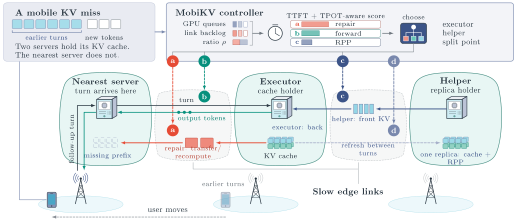
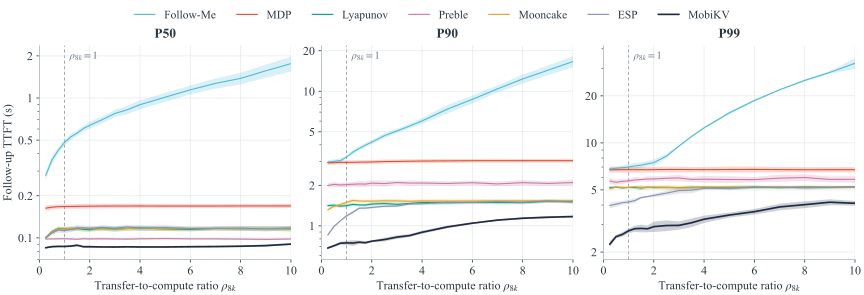
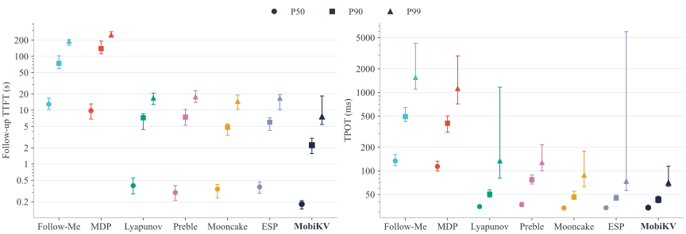

MobiKV: Replica-Assisted KV Cache Scheduling for Multi-Turn LLM Serving at the Mobile Edge

MobiKV is a replica-assisted KV cache scheduling framework for multi-turn LLM serving at the mobile edge.
It combines cache-aware placement, ratio-guided KV repair, and replica-assisted parallel prefill so a secondary KV copy can become a compute helper when the measured operating point supports it.
Snapshot
MobiKV treats the KV cache as a schedulable distributed state. The scheduler tracks cache holders, transfer backlog, compute queues, and decode pressure, then chooses placement and repair actions using the observed compute-to-transfer ratio ρsk.
| Measurement | Reported outcome |
|---|---|
| Simulator continuation p95 TTFT | 34% lower than the strongest adapted baseline |
| Replica-assisted prefill | 1.81–1.85× speedup on the A800 testbed for 8–10k-token turns |
| Online replay continuation p95 TTFT | 24% lower on the replay workload |
| Online replay p95 TPOT | 21% lower while preserving decode-first service |
Overview
Multi-turn requests often revisit a prefix whose KV cache is already present somewhere in the edge cluster. MobiKV keeps that state useful across turns and selects a repair path when the next request lands on a different worker.
The design is organized around four operations that share one scheduler state and one measurable ratio. This makes the policy interpretable across homogeneous and heterogeneous replicas.
Cache-aware placement
Place a continuation on a worker that already holds the required KV state when queueing and link conditions make reuse beneficial.
Ratio-guided repair
Compare transfer and recomputation using ρsk and retain the lower-cost repair path for each cache segment.
Replica-assisted prefill
Split a long prefill across a replica holder and the executor, streaming layer KV as it becomes available.
Decode-first replay
Give active decode work priority over background replica refresh so repaired state does not increase token-time variance.

Analysis
The ratio sweep exposes where replica-assisted prefill helps and where transfer dominates. The same operating-point view explains the tail-latency changes in the simulator and the online replay validation.
We report median and tail behavior separately because a policy can improve typical follow-up time while still creating queueing spikes. The A800 measurements therefore include p50, p90, and p99 latency summaries together with TPOT.


Reproduction
The public repository contains the simulator, replay drivers, configuration files, figure sources, and compact aggregate releases used by the project page. The data release records the workload settings, seed aggregation, and reporting units needed to reproduce the headline plots.
Start with the reproducibility notes, then use the experiment map to connect each paper claim to its entry point.
Code and configurations
GitHub contains the implementation and configuration templates for the simulator and online replay.
Aggregate data
The data release contains sanitized summaries and the field definitions used in the tables and figures.
Extended paper material
Use the appendix for derivations and the supplement for additional results.
Paper
Read the current paper PDF for the complete method and evaluation.
Citation
If you use MobiKV, please cite the paper.
@article{wang2026mobikv,
title = {MobiKV: Replica-Assisted KV Cache Scheduling for Multi-Turn LLM Serving at the Mobile Edge},
author = {Wang, Wenbin and Wang, Runan and Liu, Jiangchuan and Hu, Xiping},
year = {2026}
}